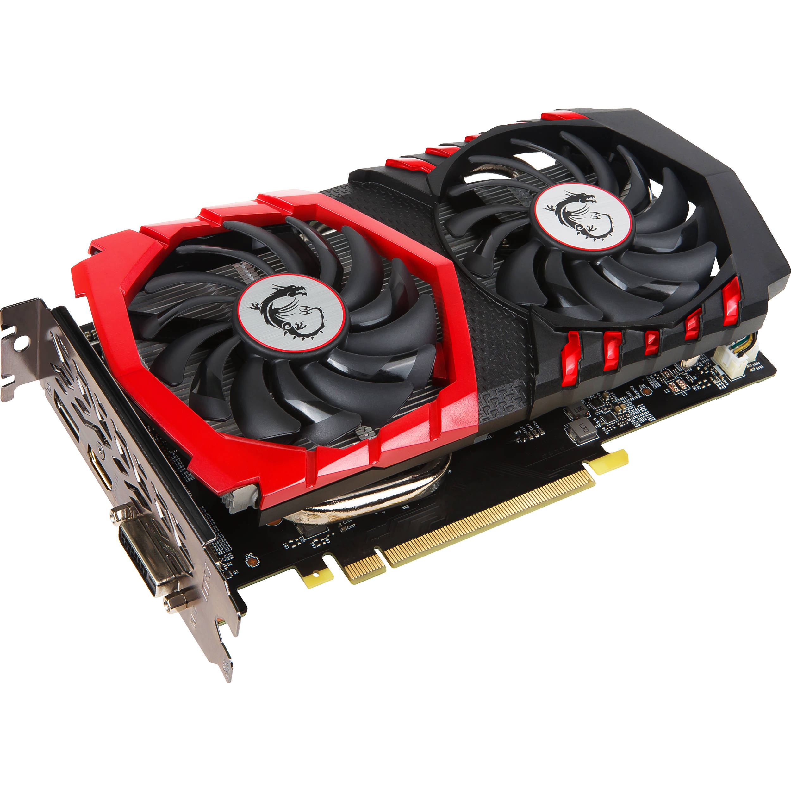

Видеокарта MSI GeForce GTX 1050 Ti GAMING X
Видеокарта GeForce GTX 1050 Ti, как следует из названия, создана специально для высокотребовательных игр, это настоящий маленький гигант в данном вопросе. Хищная красно-черная расцветка дополнена наличием двух 90-миллиметровых вентиляторов, которые позаботятся о собственном охлаждении карты, позволяя не прибегать к покупке для этой цели дополнительного оборудования, и подсветкой своих элементов. Карта поддерживает все модные нынче стандарты, включая DirectX 12 и OpenGL 4.5, а также создана на основе графического процессора nVidia, известного своими высокими возможностями дополнительной оптимизации игровых настроек при помощи принадлежащего этой компании программного обеспечения. GeForce GTX 1050 Ti обладает мощностью в 4 ГБ видеопамяти типа GDDR5 с эффективной частотой 7108 МГц и способна "обслуживать" до трех мониторов единовременно. Максимально поддерживаемое разрешение впечатляет: 7680x4320 пикселей. Для дополнительного питания карты используется разъем 6-pin, к "материнке" же подключается через стандартный PCI-E.
Основные характеристики: |
|
| Спецификации видеопроцессора | |
| Турбочастота: | 1493 МГц |
| Спецификации видеопамяти | |
| Объем видеопамяти: | 4 ГБ |
| Разрядность шины памяти: | 128 бит |
| Тип памяти: | GDDR5 |
| Вывод изображения | |
| Видео разъемы: | DVI-D, HDMI, DisplayPort |
| Система охлаждения | |
| Тип охлаждения: | Активное воздушное |